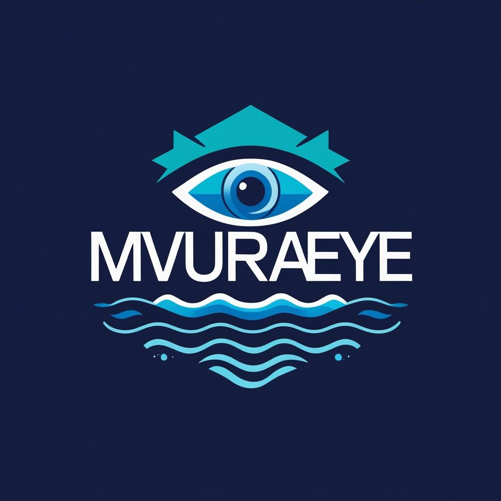

About MvuraEye
MvuraEye is a community-driven initiative dedicated to monitoring the quality of river water in areas impacted by mining and pollution. Our goal is to provide timely, transparent, and actionable data to empower residents and organizations.
Our Mission
To enable communities to make informed decisions about water use by providing real-time, accessible data on water quality through an open digital platform.
What We Do
- Deploy IoT water sensors in vulnerable regions
- Provide alerts for unsafe water conditions
- Visualize pollution trends with maps and charts
- Partner with local councils and environmental agencies
Team
MvuraEye is the work of students and tech enthusiasts with a passion for solving real-world problems using web technologies, sensors, and data.
